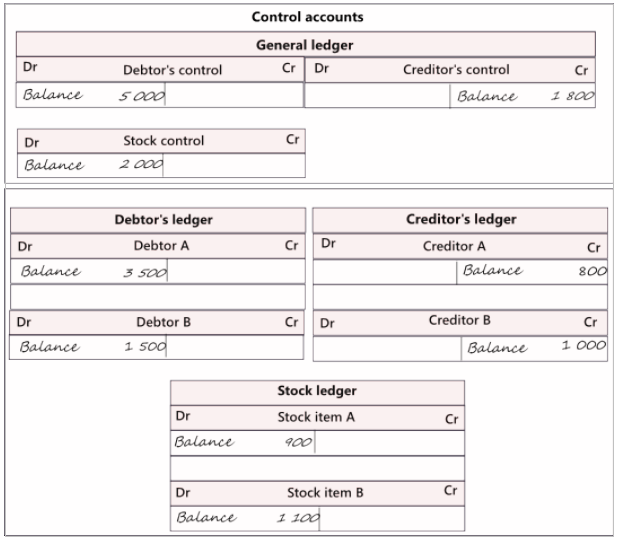

Control accounts
Control accounts are used to keep track of the total amounts owed by debtors and owed to creditors, as well as the total value of stock items. Instead of creating individual ledger accounts for each debtor, creditor, and stock item, a single control account is created in the general ledger. The control account shows the total amounts owed by all debtors or owed to all creditors, and the total value of all stock items.
To keep track of individual debtor accounts, creditor accounts, and stock items, separate subsidiary ledgers are created for each. The subsidiary ledgers contain individual ledger accounts for each debtor, creditor, and stock item. The subsidiary ledgers are managed by the debtors clerk or the purchases department, who maintain the individual ledger accounts for each debtor, creditor, and stock item.
At the end of a period, the balances in the individual ledger accounts are totalled, and the total is compared to the balance in the corresponding control account in the general ledger. If the balances match, it means that all individual ledger accounts have been properly recorded and reconciled. The same principles apply to the purchases department.
Using control accounts and subsidiary ledgers allows for more efficient management of accounting records, especially in large business enterprises with many debtors, creditors, and stock items. It also enables effective credit control and debt collection.
Using control accounts and subsidiary ledgers allows for a more organised and efficient system of managing and storing information about debtors, creditors, and stock items. It also enables businesses to delegate the management of subsidiary ledgers to specific clerks or departments, allowing for greater control and oversight. The subsidiary ledgers and the general ledger can be illustrated as follows:

General ledger - The general ledger is a comprehensive record that includes your chart of accounts, income and expenses, capital, assets, and liabilities. The chart of accounts comprises control accounts for debtor accounts, creditor accounts, and stock items (inventory items) in the form of stock ledgers. The individual subsidiary ledgers, such as the debtor's ledger, creditor's ledger, and stock ledger, contain specific details.
 Debtor's control account
Debtor's control account
The debtor's control account is a record in the general ledger that shows the total amount of money owed by all the individual debtors. The balance of the debtor's control account must match the total amount of money owed by each individual debtor, which is obtained from the various subsidiary ledger accounts for each debtor. The subsidiary ledger that tracks the individual balances for each debtor is known as the debtors' ledger.
In the debtors' ledger, you can store transaction details and additional information about each debtor, such as their personal and contact information, credit limit, payment terms, and more. The debtor's ledger also serves as a register of all the transactions between you and a specific debtor, allowing you to track each purchase and payment made by that debtor.
 Creditor's control account
Creditor's control account
The creditor's control account is an account in the general ledger that reflects the total amount owed to all individual creditors. Its balance must equal the total of the creditors' list, which represents the amounts owed by the individual creditors obtained from the individual balances in the various subsidiary ledger accounts for each creditor.
In the creditors' ledger, you can store transaction details and additional information regarding each creditor, such as their personal and contact information, credit limit, terms, etc. The creditors' ledger is also a register of each and every transaction that you and a specific creditor entered into.
 Stock control account
Stock control account
The stock control account keeps track of the overall value or amount of all the stock items a business has. It's important that the balance of each individual stock item ledger account matches the total value of the stock item list, which is made up of the amounts or values of all the individual stock items obtained from the various subsidiary ledger accounts for each item. This subsidiary ledger is called the stock ledger.
The stock ledger contains transaction details and additional information for each stock item, such as its cost price, selling price, quantity, and location on the shelves. This ledger serves as a record of every stock transaction, including purchases and sales.